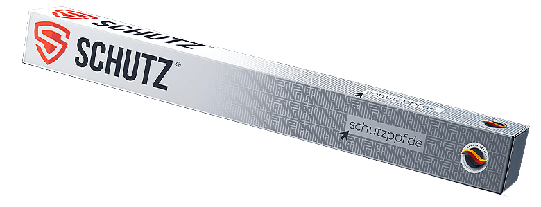

SCHUTZ
7 Yıl Garanti

SCHUTZ · TPU Şeffaf Boya Koruma Filmi
SCHUTZ GX 200 – 7 Yıl Garantili PPF
SCHUTZ GX 200, araç boyasını taş izleri, yol kaynaklı çizikler ve dış etkenlere karşı korumak amacıyla kullanılan TPU tabanlı şeffaf boya koruma filmidir. 7 yıl garanti süresiyle araç boyasının korunmasına yardımcı olur.
Garanti Süresi
7 Yıl Garanti Seçeneği
Kullanım Alanı
Araç dış boya yüzeyi; taş izleri, yol kaynaklı çizikler ve dış etkenlere karşı TPU şeffaf koruma